BCA, KLE Society's S. Nijalingappa College, Bengaluru
Academic year 2026-27. Document dated 8 October 2026.
What VibrantLearn is
A student types what they need to study and by when, for example "Java internal tomorrow 10am, BCA SEP", or uploads their own notes. VibrantLearn turns that into a personal study path: a timed plan with checkpoints, short notes in English, Kannada or Hindi, likely exam questions, quizzes and flashcards.
Who it is for
Student
Situation
What VibrantLearn gives them
The crammer
Internal test in a few hours
A tight plan of only the highest-mark topics, in focus blocks
The planner
Semester exam in weeks
Week-by-week path with checkpoints and revision loops
The notes-holder
Has the lecturer's PDF or photos
Answers from their own notes, with the page shown
The regional-language learner
Understands better in Kannada or Hindi
Notes in their language, technical terms kept in English
Contents
1Running the demo
2Landing page
3Demo sign-in and dashboard
4Asking in plain language
5Personal study plans
6Notes in three languages
7Important questions
8Quizzes
9Flashcards
10Your files
11A chat that handles any message
12Settings and your data
13Phone, tablet and laptop
14Security and privacy
15How it was tested
16What comes next
1. Running the demo
Everything is in one folder: E:\Startup\VibrantLearn\Code. Open it in any IDE (VS Code, IntelliJ, Cursor) and use either option. Node.js 20 or newer is the only requirement.
Option
How
Double-click
START-DEMO.bat in the folder
Any terminal
npm run demo from the folder
The first run installs packages and builds the app (a few minutes). After that it starts in seconds and opens http://localhost:3000. Press Try the demo to enter the app with a sample 3rd-semester BCA student. No account and no internet database are needed; the demo keeps its data in the browser.
To rebuild after code changes: npm run demo:rebuild. To run the full automatic check: uv run --no-project --with playwright python apps/web/e2e/smoke.py (17 steps).
2. Landing page
The public page explains the product by showing it: a request is typed and a real study path draws itself next to the headline.
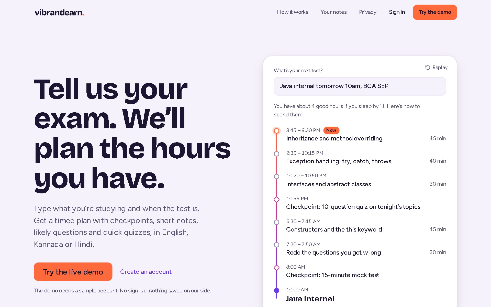
The hero: one sentence becomes a timed plan for a Java internal at 10 AM tomorrow.
Live plan demo in the hero, with a Replay button. People who prefer reduced motion see the finished plan straight away.
Scroll motion: a brand-coloured progress line, sections that ease in, and a header that turns solid as you scroll.
One-click demo from the header or hero. "Create an account" is ready for when the database is connected.
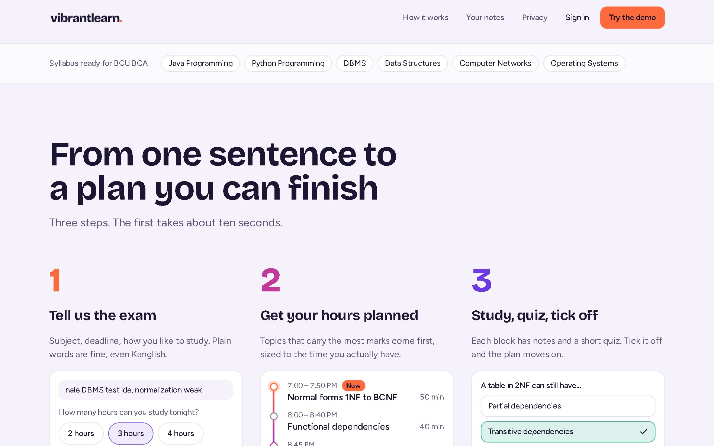
How it works: three real steps, each shown with the actual app fragment.
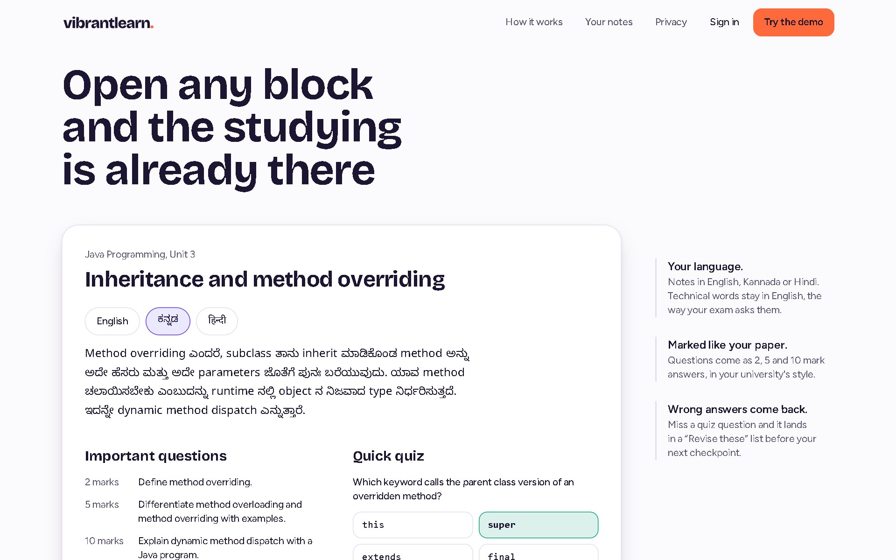
"Open any block": notes switchable between English, ಕನ್ನಡ and हिन्दी, 2/5/10-mark questions and a quick quiz.
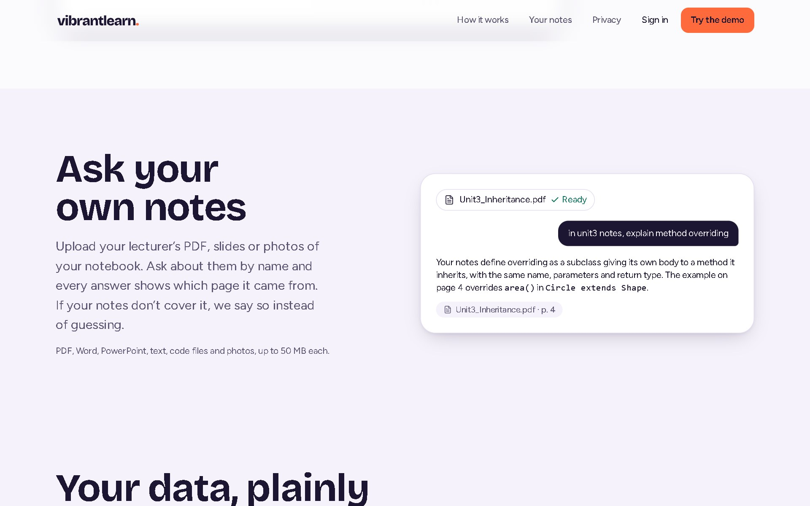
Ask your own notes, with the source page shown.
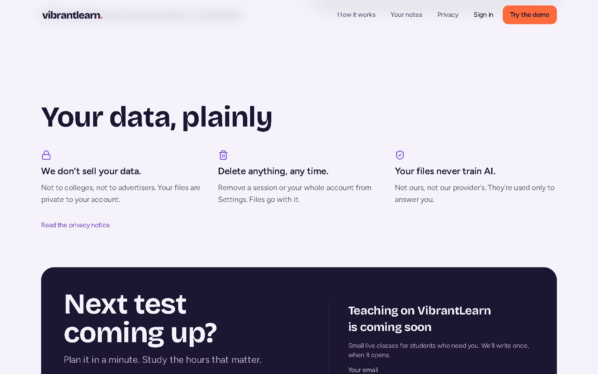
Privacy in plain words, and the teacher waitlist.
No invented numbers or fake testimonials. Every example uses real BCA syllabus content.
The footer credits the team: built by Bipin A and Darshan H.S.
3. Demo sign-in and dashboard
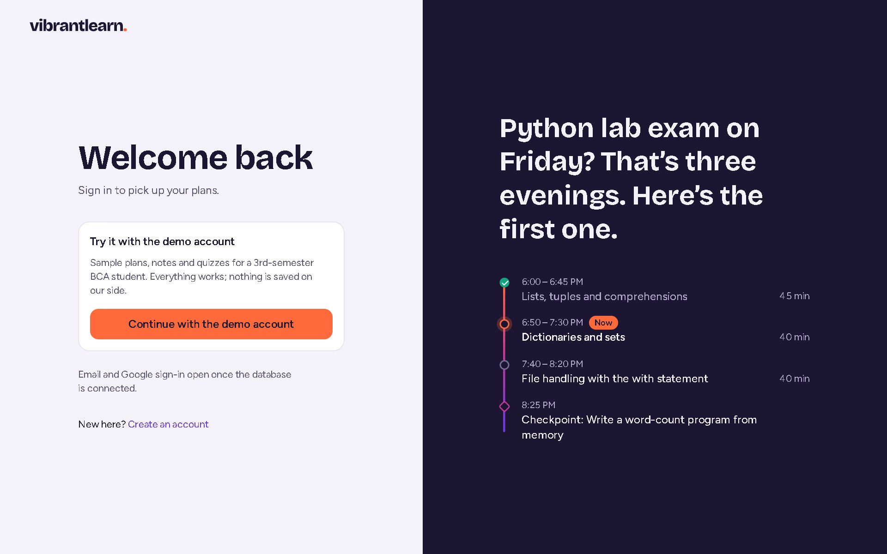
Sign-in page. In demo mode one button opens the app; email and Google sign-in switch on when the database is connected.
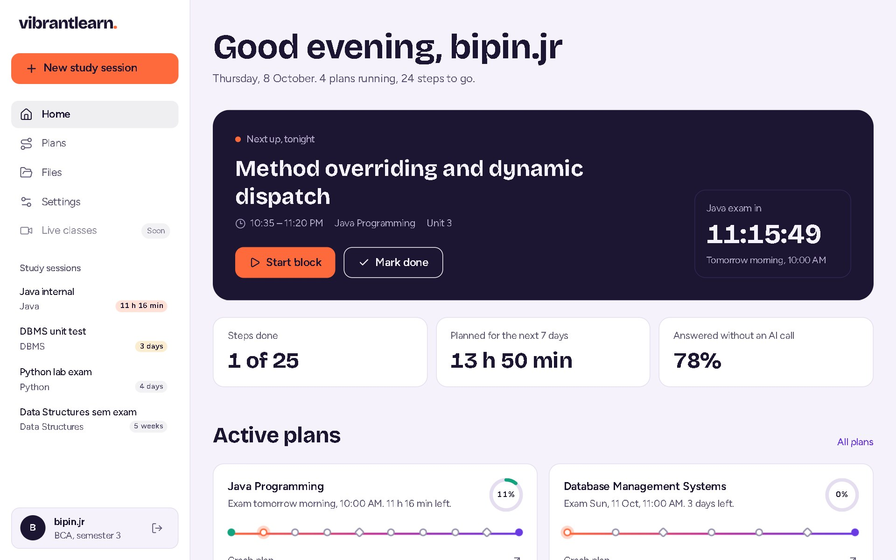
Dashboard: the next study block, a live countdown to the exam, progress and all active plans.
Next up shows exactly what to study now, with Start block and Mark done.
Live countdown to the exam, ticking every second.
Real progress numbers worked out from the plans: steps done, hours planned this week, and how many answers needed no AI call.
Sidebar lists every study session with time left, coloured by urgency (under a day, under three days, later).
4. Asking in plain language
Students write the way they talk, including Kanglish and Hinglish. The app reads the subject, the deadline, the hours available, the language and the weak topics. It asks one short follow-up if something is missing.
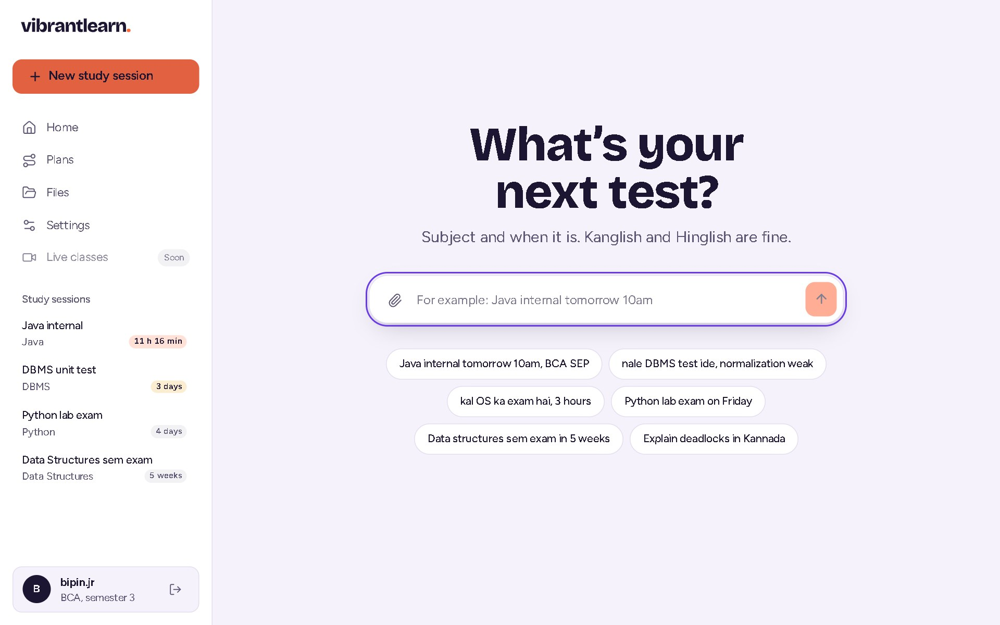
New session with one-tap ideas.
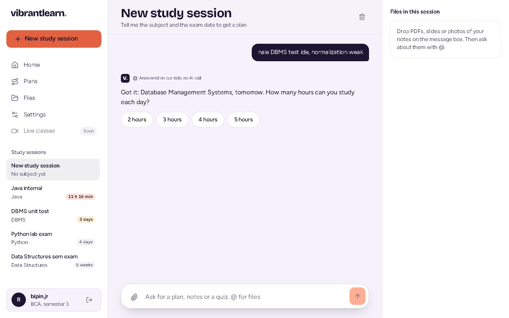
"nale DBMS test ide, normalization weak" is understood as DBMS, tomorrow. It asks for hours.
The student writes
VibrantLearn understands
Java internal tomorrow 10am
Java Programming, tomorrow 10:00 AM, crash plan
nale DBMS test ide, normalization weak
DBMS, tomorrow (Kannada "nale"), normalization first
kal OS ka exam hai
Operating Systems, tomorrow (Hindi "kal")
python lab exam on friday
Python Programming, the coming Friday
data structures sem exam in 5 weeks
Data Structures, five weeks, steady plan
explain deadlocks in kannada
Operating Systems notes, Kannada
This step runs on our side without any AI call, so it is instant and free. The parser is covered by automated tests on 32 phrasings.
5. Personal study plans
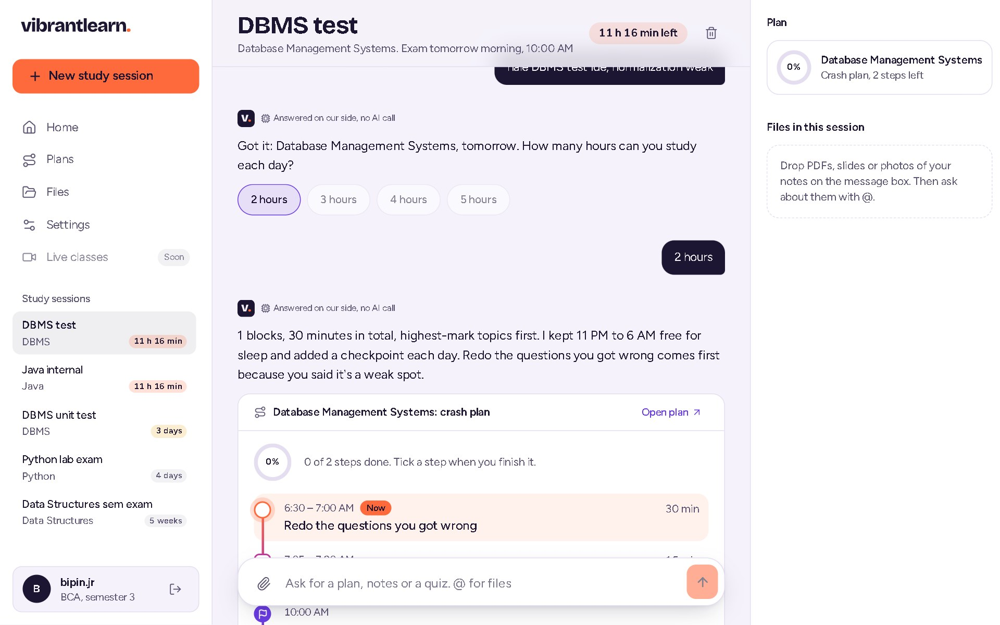
A plan built in about a second: the weak topic first, real clock times, sleep kept free, checkpoints and the exam at the end.
Time left
Plan type
How it is built
Up to 6 hours
Sprint
Top-mark topics only, 25-minute focus blocks, a 15-minute mock quiz at the end
Up to 3 days
Crash
Evening blocks within your daily hours, a checkpoint every day, revision on the last evening, a short morning slot before the exam
Up to 4 weeks
Steady
A unit per week, weekend checkpoints, the last week for revision
Longer
Deep
All units, weekend checkpoints and three spaced revision loops
Topics are ordered by exam weight from the syllabus, with anything the student called weak moved to the front.
A plan never runs past the exam and stops at 11 PM.
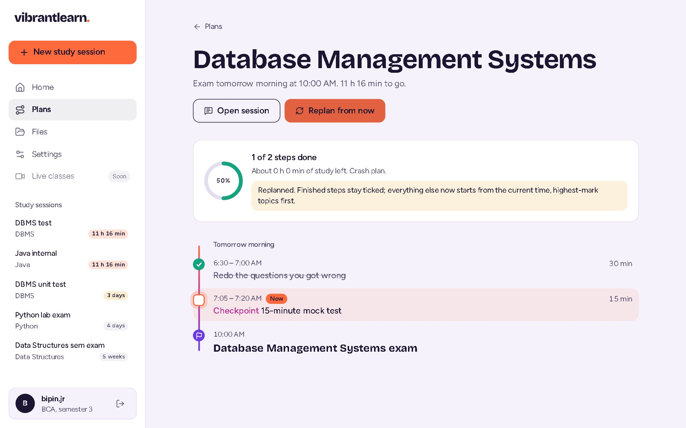
Plan view: tick steps off, watch the progress ring fill, and replan from now if you fall behind.
Route-line timeline: current step in Ember, finished steps in green with a tick, the exam in Violet.
Ticking a step draws the tick, plays a short burst and updates the ring.
Replan from now keeps finished steps and rebuilds the rest for the time actually left.
The app warns when steps are behind schedule.
6. Notes in three languages
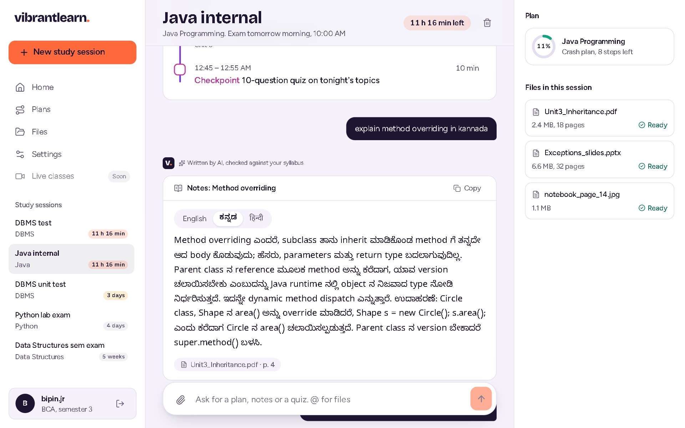
Short notes on method overriding in Kannada, technical words kept in English, with the source page from the student's own PDF.
Switch between English, ಕನ್ನಡ and हिन्दी on any note.
Proper Kannada and Devanagari fonts.
Copy button, and source chips when an answer came from an uploaded file.
Repeat questions are answered from saved answers, without calling the AI again.
7. Important questions
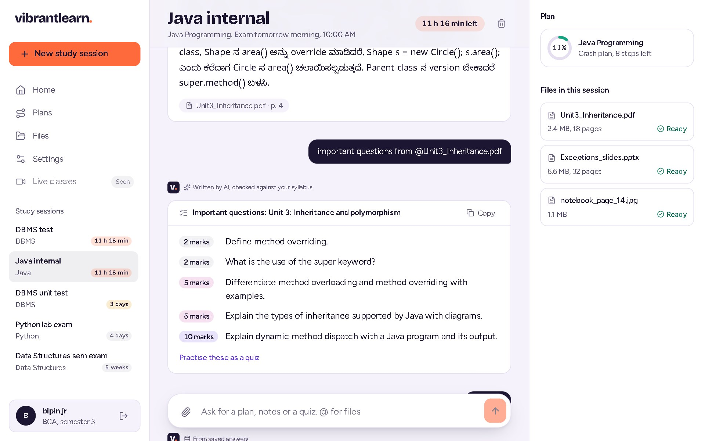
2, 5 and 10-mark questions in the university's style, with "Practise these as a quiz".
8. Quizzes
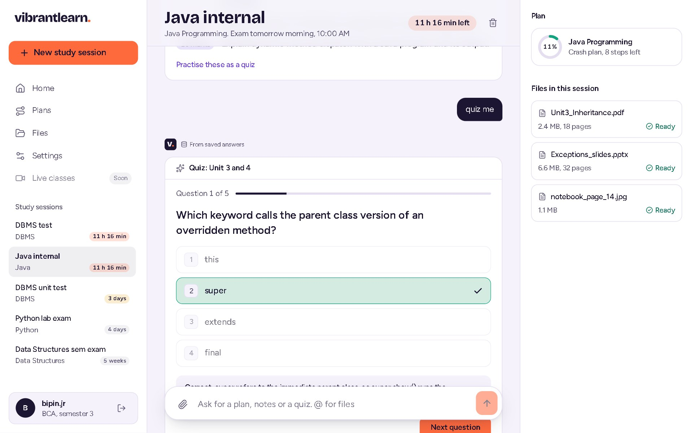
One question at a time. The correct answer fills green from where you clicked, and an explanation opens below.
Answer with the mouse or keys 1 to 4.
A wrong pick shakes and gets a red outline, and the right answer is shown.
The score screen lists the topics to revise, with "Explain what I missed".
9. Flashcards
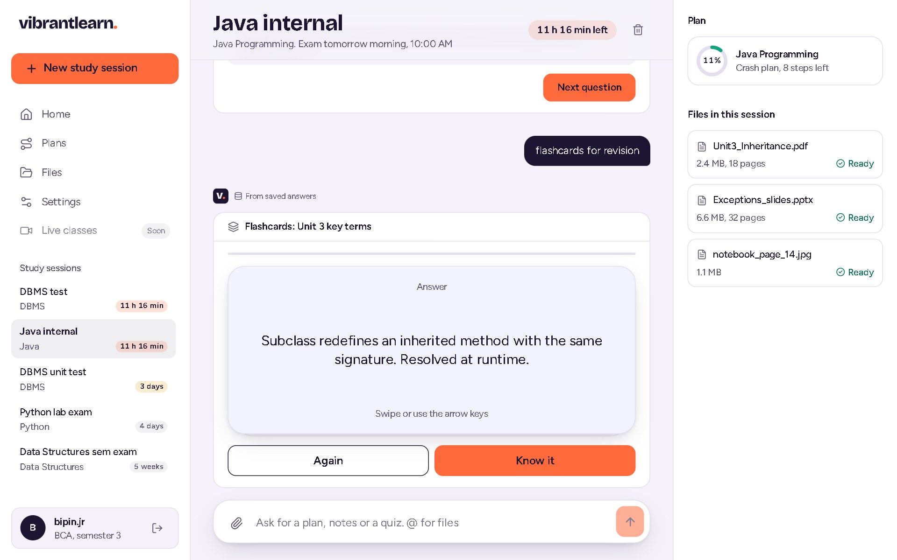
Cards flip in 3D. Swipe right or press → for "Know it", left or ← for "Again".
10. Your files
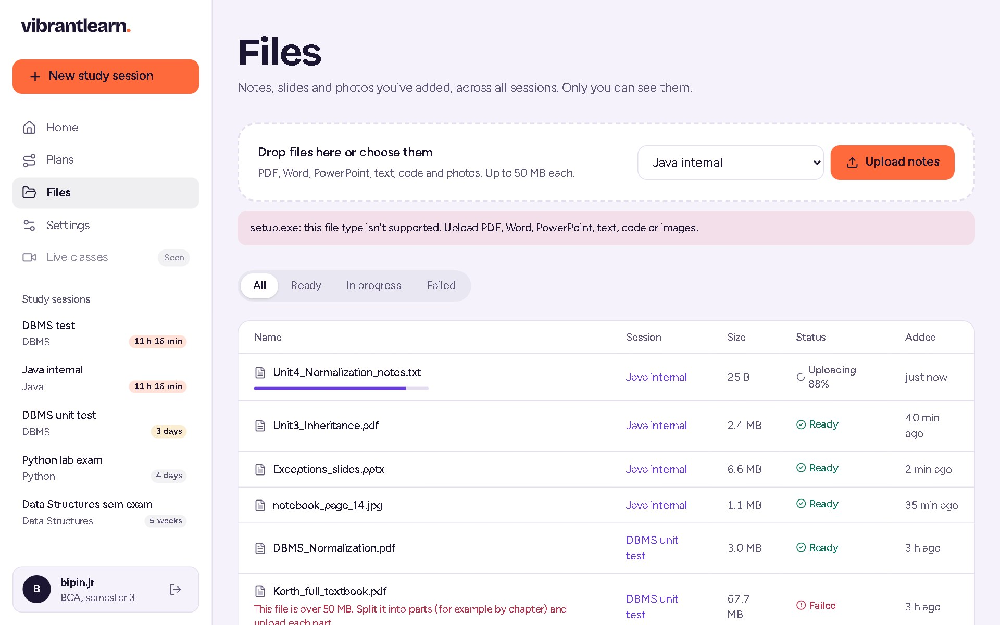
Uploads show real progress, then Checking, Processing and Ready. Unsupported files are refused with a clear reason.
Accepted: PDF, Word, PowerPoint, text, code files and photos, up to 50 MB each.
Refused with a reason: programs such as .exe, and files over 50 MB ("Split it into parts, for example by chapter").
Ask about a file in chat with @filename. Answers show the file and page they came from.
Drag files onto the message box or the Files page.
11. A chat that handles any message
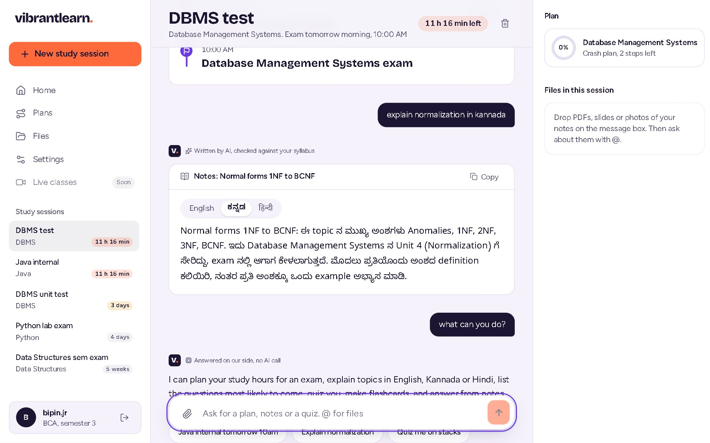
Study replies are documents (plans, notes, quizzes), not chat bubbles. Every reply says where it came from.
Message
What happens
Study requests (plans, notes, questions, quiz, flashcards)
Answered instantly on our side from the syllabus
"hi", "thanks", "what can you do?"
A friendly reply with suggestions to tap
Anything else ("what is photosynthesis", "how to stay focused")
Sent to the AI model (Groq) on the server, in the student's language. Without an AI key, a polite note and suggestions
Something unclear or gibberish
"I didn't catch that" with suggestions
Changing topic mid-question
The app follows the new request instead of getting stuck
Offline, timeout or AI busy
A clear message and a "Try again" chip. Nothing breaks
To let the chat answer any question, put a free key from console.groq.com in apps/web/.env.local as GROQ_API_KEY=... and restart. The key stays on the server and never reaches the browser.
12. Settings and your data
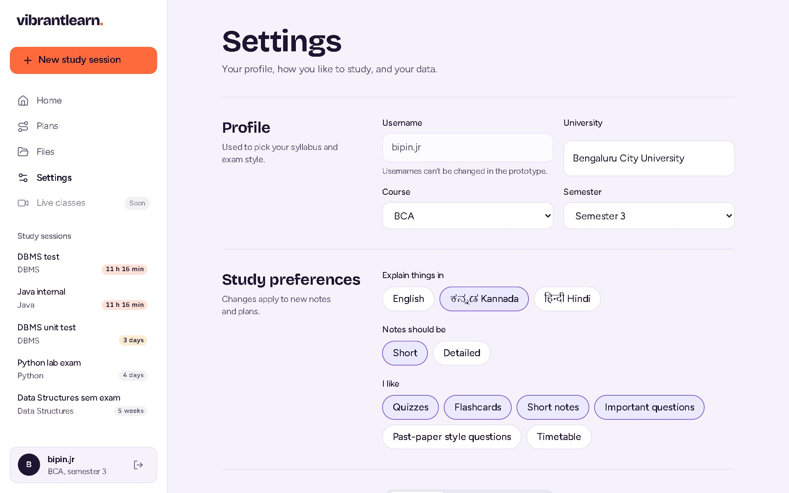
Profile, study preferences, theme, usage limits, data export and account deletion with typed confirmation.
Study preferences (language, short or detailed notes, favourite formats) apply to new answers.
Theme: System, Light or Dark. Dark mode is designed, not inverted:
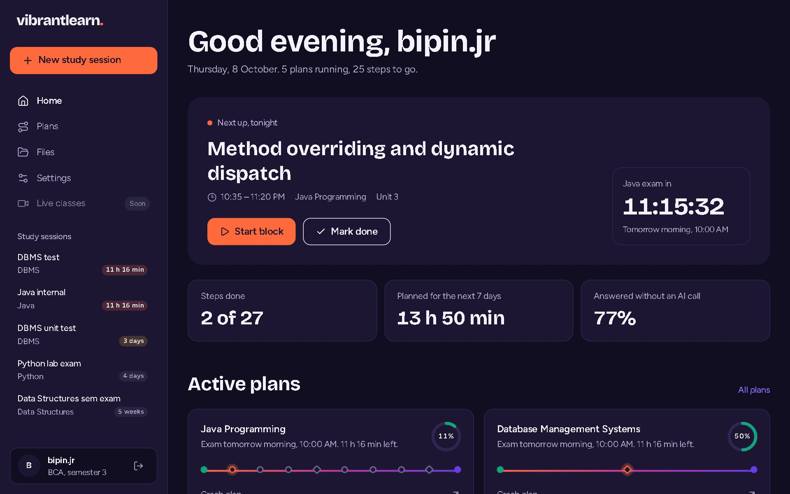
Dashboard in dark mode.
Usage meter shows messages, plans and uploads against fair-use limits.
Export my data downloads everything as a JSON file.
Delete account needs the username typed (switched off for the demo account).
13. Phone, tablet and laptop
Every screen was built for phones first and checked automatically at 360 px (phone), 768 px (tablet) and 1280 px (laptop), with no sideways scrolling on any page.
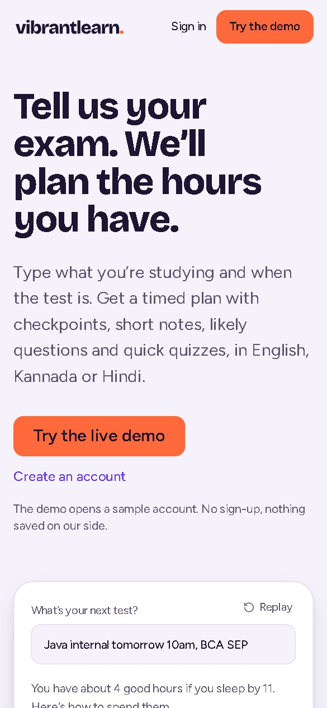
Landing
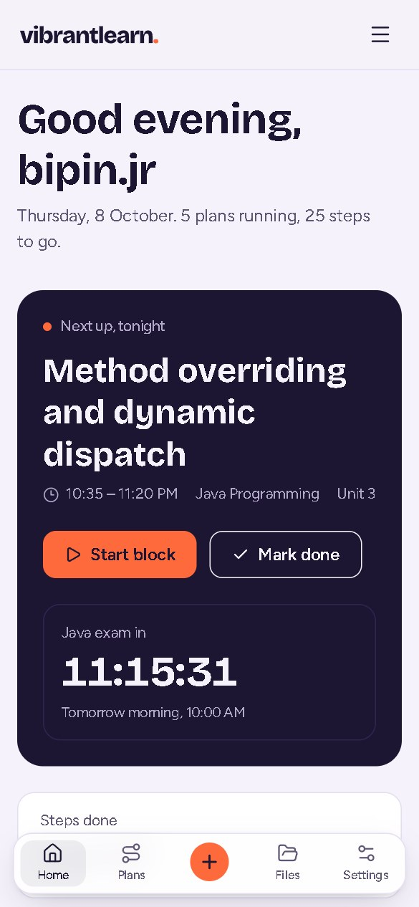
Dashboard and bottom bar
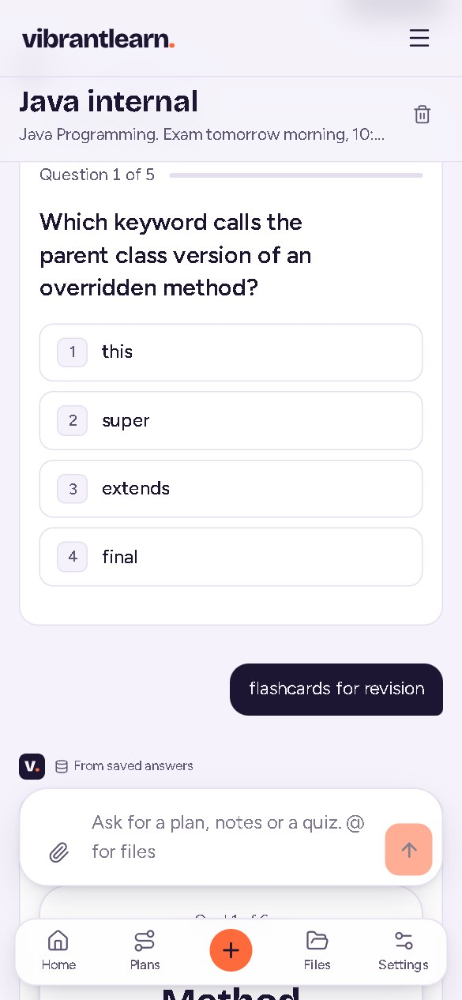
Study session
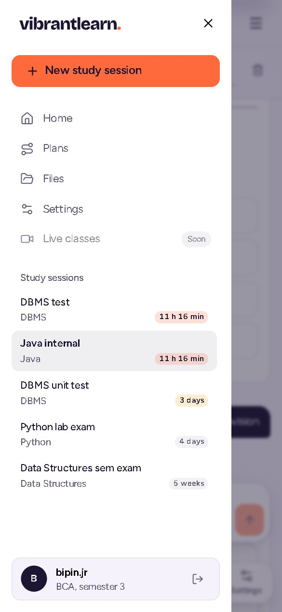
Slide-in menu
Bottom tab bar with a central "New" button that's easy to reach with a thumb.
The menu slides in from the side; Esc or a tap outside closes it.
Touch swipes on flashcards; keyboard shortcuts on laptops.
14. Security and privacy
Data rules in the database (row level security): each student can read only their own sessions, plans, files and quizzes. 34 automated database tests are written to check that one student can never see another's data; they run once the cloud database is connected.
Private file storage: each student's files sit in their own folder. Unsupported types and oversized files are refused, and files are never opened in the browser as web pages.
Browser protection headers: a strict Content Security Policy with a fresh code per request, no framing by other sites, and no server version shown.
No secrets in the browser. AI and database keys live only on the server.
Secure sessions: the demo session cookie can't be read by page scripts.
The demo can't be abused: demo mode is always off on the live website.
Fair-use limits on messages, plans, uploads, sign-ups and the waitlist.
Usernames are checked three times: in the browser, on the server and in the database.
Privacy (India's DPDP Act 2023): a privacy notice, consent, export and delete. Files and chats never train any AI model.